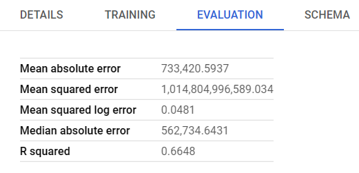
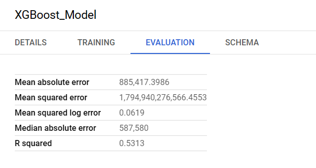
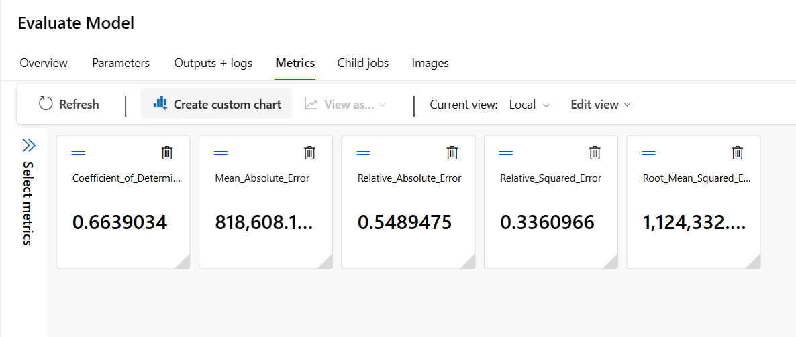
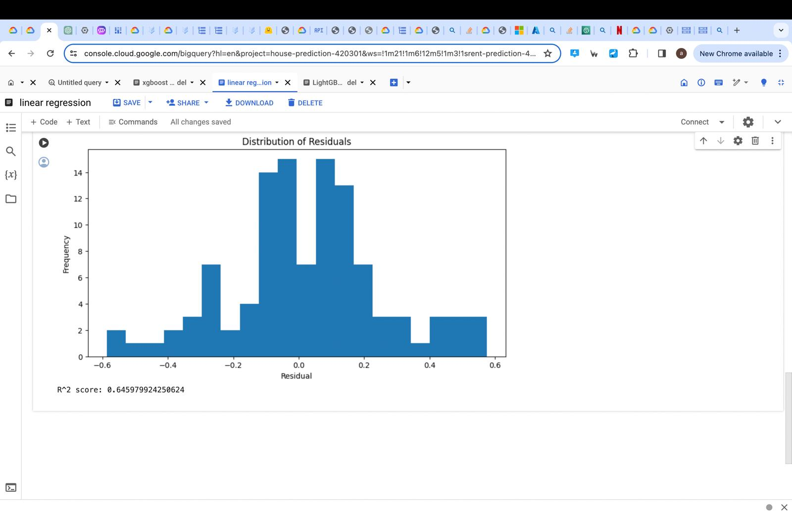
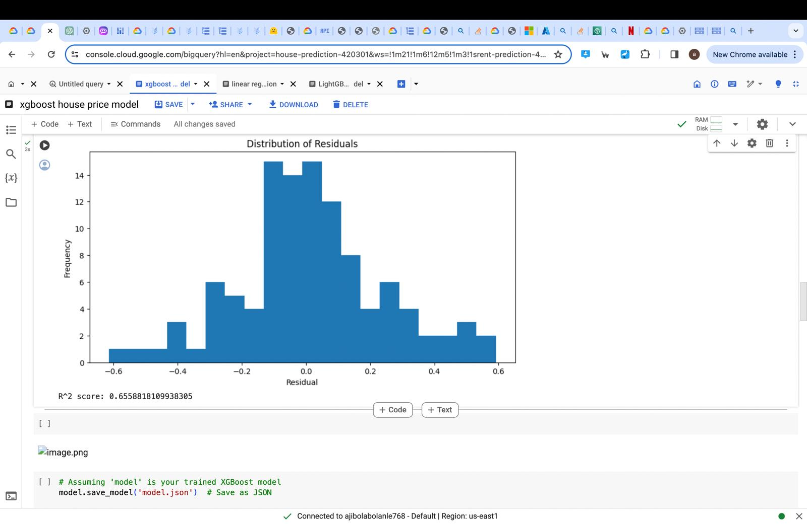

Result Section
-
Big Query(SQL):
- Linear Regression 
- XGBoost 
-
Azure Machine Learning Studio:
- Linear Regression 
- lightGBM

-
Python:
- Linear Regression 
- XGBoost 
- lightGBM

Linear regression on Big Query(SQL) achieved the highest R-squared value of 0.6648, followed by azure which achieved an R-squared value of 0.6639 . Python(scikit-learn) achieved the lowest r-squared of 0.6460 . XGboost on python achieved the highest r-squared value of 0.6559 while Big Query(SQL) achieved 0.5313 . Azure was unable to apply XGboost as it does not support the library. lightGBM on python achieved the highest r-squared value of 0.6366 while Azure achieved an value of 0.6307 . Big Query was not able to produce any score of lightGBM as it does not support it natively. SO for better flexibility and performance, it is better to use python for XGBoost and lightGBM rather than using big query(sql) and azure. If we really want to focus on linear regression then we may use sql on big query even though python and big query(sql) have very similar results.